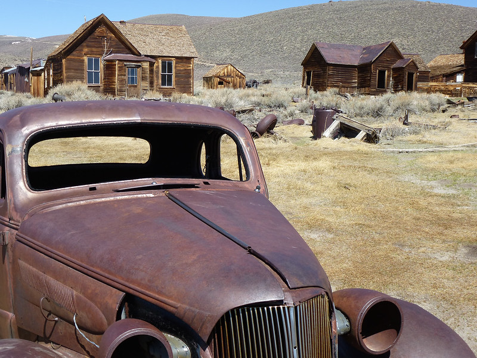

Hummingbird hawkmoth (Macroglossum stellatarum) collecting nectar from lilac bush. Favored by the very warm weather, countless specimen (also called "Swabian Alb hummingbirds") buzz around this year, busy collecting nectar.
Butterfly ('Painted Lady')
Blue carpenter bee (also 'large' or 'purple carpenter bee').
The shape of the blue carpenter bee is reminiscent of a bumble bee.
With a body length of 23 to 28 millimeters, it is the largest domestic
bee species. With its blue-black body and blue-shimmering wings, it is
hardly to be confused with other insects even in flight. This wild bee
is able to sting, but is not aggressive towards humans. It is also
called Big Blue Carpenter Bee, Big Carpenter Bee, Blue-Black Carpenter
Bee or Purple Carpenter Bee, the scientific name is Xylocopa
violacea.
(Source: Nabu)
Lone Cypress
The "Lone Cypress" on 17 Mile Drive - Highway 1, California
Monte Gusela, Novolau (Passo di Giau)
Monte Gusela with Rifugio Novolau at Passo di Giau in the rising sun
The bottom cascade of the Krimmler Waterfalls in Krimml, Austria
With a total drop of 385 m, the Krimml Waterfalls are the highest
waterfalls in Austria. They are located on the outskirts of Krimml
(Salzburg), in the Hohe Tauern National Park near the border with
Italy. They are formed by the Krimmler Ache, which plunges into three
falls at the end of the high Krimmler Achental. The river then flows
into the Salzach, which flows along the Pinzgau towards Salzburg and
the mouth into the Inn.
(Source: Wikipedia.de, various authors and Wasserfaelle-krimml.at)
Einserkofel, Sesto Dolomites
The Einserkofel at the Drei Zinnen is reflected in the afternoon light
Northwest shore of Mauna Lani Resort, part of Big Island, Hawaii
Bodie Truck at Ghost Town Bodie, California . . .
. . . Bodie Truck . . .
GMC Jimmy, Rocks
GMC Jimmy, Monument Valley GMC Jimmy
our trusted 1990 GMC Jimmy, parked in Monument Valley, scenic drive
(rain god mesa)
. . . Bodie Truck.

Autunum morning panorama, Kappishäusern
... the first rays of sunshine roam the vineyards in Kappishäusern
while the Erm valley is still in the early mist.